1. Harness 是方法本体
论文把 agent interface \(I=(A,O,T,r)\) 视为可设计对象，而不是固定 tool wrapper。
这篇论文的核心主张是：不要把多轮 search agent 的候选池、证据关系、验证记录和上下文预算都压回 LLM transcript， 而是让 harness 维护可恢复的搜索状态，policy 只学习搜索、curate、verify 和 stop 等语义决策。
Harness-1 是一个基于 gpt-oss-20b 的 20B retrieval subagent。它把 search episode 写成 state-machine：harness 维护候选池、curated set、importance tags、full-text store、evidence graph、verification cache、 search history 和 budget marker；policy 每轮只发一个 structured action，编辑这个显式状态。
论文把 agent interface \(I=(A,O,T,r)\) 视为可设计对象，而不是固定 tool wrapper。
机械 bookkeeping 由环境维护，policy 保留“搜索什么、读什么、保留什么、验证什么”的语义决策。
提出 warm-started curation、compact derived-state rendering、diversity-preserving incentives 三个条件。
held-out transfer 增益大于 source-family 增益，说明学到的是状态操作策略而不只是领域 replay。
在 retrieval-agent RL 中，显式 search state 可以降低 policy 的记忆负担，让 RL 学会更稳定的 evidence collection、curation 和 verification 行为。
传统 search agent 往往是“LLM + retrieval tools + growing transcript”。这会让同一个 policy 同时承担两类工作： 一类是语义决策，比如下一步搜哪个约束、是否读取某个 document、是否需要 verify；另一类是可恢复的 bookkeeping， 比如哪些文档看过、哪些候选值得保留、哪些实体在多个文档中桥接、还剩多少 context budget。
论文认为第二类工作不应占用 policy 的优化预算。对 RL 尤其如此：hard query 初期可能都是 empty curated set，reward 难以区分失败原因； tool vocabulary 变大后，policy 可能坍缩为反复 search；跨文档结构虽然存在于 transcript 中，但过于分散，难以稳定利用。
把 search agent 的长期工作记忆从 append-only transcript 变成可编辑、可渲染、可训练的环境状态。
RLVR / agentic search 越来越依赖长 horizon、多工具和稀疏终局 reward；没有良好的 harness，RL 容易优化到搜索数量而非证据质量。
Context-1 已经把 context management 作为搜索过程的一部分；Search-R1 等工作训练 LLM interleave reasoning and search。 Harness-1 的更强主张是：interface 本身应承担可恢复状态，policy 在这个 state representation 上学习，而不是在 raw transcript 上重建状态。
Harness-1 的核心抽象是将工具调用从单步 text observation 改写为显式 state transition。工具结果不会只追加到 prompt， 而会更新 working memory；下一轮 prompt 渲染的是压缩后的状态摘要。
| 符号 | 含义 | harness 维护什么 | policy 仍决定什么 |
|---|---|---|---|
| \(P_t\) | candidate pool | 压缩、去重后的候选文档池 | 读哪些、检查哪些、curate 哪些 |
| \(C_t, I_t\) | curated set 与 importance map | 最多 30 个文档，四级 importance，capacity eviction | add/remove/promote/demote 哪些文档 |
| \(D_t\) | full-text store | 所有已检索 chunk 的完整文本，不全部塞进 prompt | 哪些已见文档需要 read/review |
| \(G_t\) | evidence graph | regex 抽取 entity/year/date，维护 entity-document bridges | 追踪哪个 bridge、singleton 或 relation |
| \(V_t\) | verification cache | claim-to-doc yes/no 与 rationale | 写什么 claim、检查哪些 doc |
| \(H_t, B_t\) | search history 与 budget marker | 工具历史、结果摘要、上下文预算 | 何时 diversify、backtrack、stop |
这个转变使 policy 不必从历史文本里重新推断“候选池中有什么、哪些证据已被验证、哪些候选被标为 high confidence”。 每个 action 是对 working memory 的编辑：retrieval 更新 \(P_t,D_t,G_t\)，curate 更新 \(C_t,I_t\)，verify 更新 \(V_t\)，end search 返回 priority-sorted curated set。
fan_out_search、search_corpus、grep_corpus、read_document、review_docs。
curate(add, remove, importance) 编辑 capped set；verify(doc_ids, claim) 运行 per-document entailment check。
end_search(reasoning) 终止 episode，并把 importance-ordered \(C_t\) 交给下游 answer generator。
RL 使用 full-trajectory rollout、terminal-only reward、40-turn cap、无 KL anchor。若最终 curated set 为空，reward 直接 short-circuit 到 \(\pi_{\emptyset}=-0.2\)。 对成功格式化且非空的 episode，reward 下界裁剪到 \(R \geq 10^{-3}\)。
其中 \(F_{\beta}\) 用 \(\beta=2\)，使 recall 权重为 precision 的四倍；\(\rho_{\tau}\) 是 trajectory recall，\(\rho_A\) 是 curated final-answer recall， \(\rho_{\tau A}\) 是 trajectory final-answer recall，\(\nu\) 是使用的 distinct tools 数量，\(\nu_0=6\)。 这个 reward 把“发现证据”和“把证据选入最终 curated set”分开，并用 answer-miss penalty 惩罚“已经见到 answer evidence 但未提交”的失败。
SFT 只教模型操作 stateful interface：tool-call format、search-to-curate rhythm、importance tagging、memory review 和 verify-before-promote。 teacher 是 GPT-5.4 live agent，使用同一套 Harness-1 tools 与 WORKINGMEMORY renderer。过滤条件包括 format-valid、至少返回一个 document、 final curated recall \(\geq 0.10\)。899 条保留轨迹被 replay 成约 26K turn-level SFT examples。
SFT checkpoint 是 step 550。RL 从该 checkpoint 开始，在 SEC training split 的 3,453 queries 上做 on-policy CISPO， 每步 128 queries、每 query 8 rollouts、共 80 steps，约 82K rollouts。groups with identical rewards 会从 gradient 中丢弃。
| 模块 | 设置 | 值 | 复现含义 |
|---|---|---|---|
| SFT | Base / Adapter | openai/gpt-oss-20b, LoRA rank 32 | 只训练 harness 操作先验 |
| SFT | LR / batch / epochs | 5e-6 / 128 / 3 | selected checkpoint step 550 |
| RL | Algorithm | on-policy CISPO, clip [0, 5] | full episode, terminal reward |
| RL | LR / group / steps | 1e-5 / 8 rollouts per query / 80 steps | 128 queries per step, 1,024 rollouts per step |
| Env | Context and turns | 32,768 context, 2,048 generation, MAX_TURNS 40 | Harness-1 evaluation 40 turns |
| Retrieval | Backend | hybrid BM25 + dense, RRF, Qwen3-Reranker-8B | 外部检索与 reranker 需复现 |
| Harness | Capacity | MAX_CURATED_DOCS 30, AUTO_POPULATE_TOP_K 8 | 最终返回文档预算固定 |
论文评估八个 retrieval benchmarks：BrowseComp+、Web synthetic、Patents、SEC、LongSealQA、Seal0QA、FRAMES、HotpotQA。 前四个是 source-family benchmarks，SFT 覆盖 BC+、Web、Patents、SEC，RL 只覆盖 SEC；后四个是未用于 SFT/RL 的 held-out transfer benchmarks。
| Benchmark | Backend | Test queries | Domain | Style |
|---|---|---|---|---|
| BrowseComp+ | Chroma BC+ corpus | 166 | Web encyclopaedic | Multi-constraint |
| Web | Chroma web 1.17 | 554 | Web encyclopaedic | Multi-hop |
| Patents | Chroma USPTO 1.18 | 718 | Legal / USPTO | Single-doc heavy |
| SEC | Chroma SEC 1.4 | 5,023 | Finance filings | Multi-filing |
| LongSealQA | Chroma longsealqa | 254 | Open web | Multi-hop, long-context |
| Seal0QA | Serper + Jina web | 111 | Open web | Factoid / multi-hop mix |
| FRAMES | Serper + Jina web | 824 | Open web | Multi-hop |
| HotpotQA-subset | Serper + Jina web | 493 | Open web | 2-hop |
令 \(A_q\) 是 answer-bearing documents，\(R_q\) 是完整 relevant set，\(C_q\) 是最终 curated set，\(P_q\) 是 episode 中遇到过的 trajectory pool。 论文报告三个 recall-oriented metrics：
dataset-level score 是 query macro-average。Final-Answer Recall 不必高于或低于 Recall，因为 \(A_q\) 与 \(R_q\) 的分母不同。 Trajectory Recall 是 discovery upper-bound-style diagnostic：如果它高而 final Recall 低，失败更可能发生在 selection/curation。
所有方法尽量共享 retrieval primitives、web backend、Qwen3-Reranker-8B 和最多 30 returned documents 的最终预算。 Harness-1 使用 temperature 1.0 与 40-turn cap；Context-1 和 frontier LLM zero-shot retrievers 使用 Context-1 harness、temperature 1.0 与 64-turn cap。 open-model baselines 包括 gpt-oss-20b/120b、Qwen3-32B、Context-1、Search-R1 32B、Tongyi DeepResearch 30B。
论文给出了代码 URL 与大量超参数，但本次构建没有下载 GitHub 仓库，也没有验证模型权重、Tinker 训练环境、Baseten-hosted reranker、Serper/Jina web backend 是否可直接访问。
Harness-1 的平均 curated recall 为 0.730，是论文评估的 open-source small models 中最高。唯一平均 curated recall 更高的是 frontier Opus-4.6， 但 Harness-1 是 20B open search subagent，并且 trajectory recall 平均 0.807，说明它通常能发现大量相关证据。
| Model | Avg | BC+ | Web | Patents | SEC | LongSeal | Seal0 | FRAMES | HotpotQA |
|---|---|---|---|---|---|---|---|---|---|
| Harness-1 20B | 0.730 | 0.584 | 0.787 | 0.890 | 0.589 | 0.891 | 0.551 | 0.710 | 0.841 |
| Context-1 20B | 0.603 | 0.500 | 0.689 | 0.857 | 0.467 | 0.563 | 0.367 | 0.638 | 0.746 |
| GPT-OSS-20B | 0.262 | 0.109 | 0.174 | 0.393 | 0.133 | 0.253 | 0.250 | 0.391 | 0.395 |
| Tongyi DeepResearch 30B | 0.616 | 0.381 | 0.607 | 0.780 | 0.419 | 0.855 | 0.577 | 0.561 | 0.751 |
| Search-R1 32B | 0.289 | 0.053 | 0.135 | 0.405 | 0.109 | 0.514 | 0.312 | 0.329 | 0.454 |
| Qwen3 32B | 0.216 | 0.072 | 0.132 | 0.257 | 0.058 | 0.427 | 0.279 | 0.164 | 0.342 |
| Opus-4.6 | 0.764 | 0.619 | 0.819 | 0.915 | 0.589 | 0.823 | 0.636 | 0.814 | 0.893 |
| GPT-5.4 | 0.709 | 0.443 | 0.800 | 0.909 | 0.452 | 0.824 | 0.555 | 0.815 | 0.870 |
| Sonnet-4.6 | 0.688 | 0.505 | 0.744 | 0.832 | 0.411 | 0.783 | 0.577 | 0.787 | 0.863 |
| Kimi-K2.5 | 0.647 | 0.593 | 0.707 | 0.833 | 0.454 | 0.661 | 0.455 | 0.697 | 0.776 |
| GPT-OSS-120B | 0.496 | 0.508 | 0.478 | 0.570 | 0.395 | 0.464 | 0.400 | 0.495 | 0.657 |
上表复刻 Table 2 的 curated-set Recall 列并增加均值；Final-Answer Recall 与 Trajectory Recall 的完整原表见图表区的 Table 2 截图。
相对 Context-1，Harness-1 在 source-family benchmarks 的 recall gain 是 +6.2、+9.8、+3.3、+12.2，平均 +7.9； 在 held-out transfer benchmarks 的 gain 是 +32.8、+18.4、+7.2、+9.5，平均 +17.0，是 source-family 的 2.2 倍。 这支持作者解释：policy 学的是 domain-general search-state operations，而不是只 replay SFT/RL 领域模式。
| Configuration | Recall | ∆Recall (%) | FA Recall | ∆FA (%) | Failure mode |
|---|---|---|---|---|---|
| Full Harness-1 | 0.584 | 0.0 | 0.667 | 0.0 | baseline |
| Minus importance tags | 0.560 | -4.1 | 0.614 | -7.9 | binary curate + FIFO eviction，优先级信号消失 |
| Minus Sentence-BM25 compression | 0.585 | +0.2 | 0.620 | -7.0 | raw chunks 更长更嘈杂，bridge sentences 更易丢失 |
| Minus auto-seed | 0.582 | -0.3 | 0.624 | -6.4 | early curated set 缺少比较上下文 |
| Minus evidence graph | 0.569 | -2.6 | 0.631 | -5.4 | 跨文档 bridge 不可见 |
| verify unavailable | 0.566 | -3.1 | 0.641 | -3.9 | 无法闭环检查 claim support |
| review_docs unavailable | 0.598 | +2.4 | 0.641 | -3.9 | 需要更多 search/read 代替 memory review |
| Minus content-fingerprint dedup | 0.611 | +4.6 | 0.678 | +1.6 | BC+ qrels 近重复导致 recall 口径受影响 |
| All mechanisms disabled | 0.513 | -12.2 | 0.624 | -6.4 | 探索仍在，但选择 substrate 消失 |
解释上最关键的不是单项机制的绝对增益，而是行为变化：删除状态机制后，失败 query 中 search_corpus 频率上升， read_document 和 verify 下降 2 到 6 倍，policy 回到宽而浅的搜索模式。
Figure 5 比较了是否启用 \(w_{\mathrm{div}}\)。没有 diversity reward 时，agent 迅速学会大量调用 fan_out_search，trajectory recall 可上升，但 curation/verification 被绕开，tool diversity 从约 6 降到约 3.5， curated recall plateau 在约 0.53。启用后，tool diversity 稳定在约 4.30，最终 curated recall 达到约 0.60。
Appendix O 把每个 subagent 的 curated set 交给冻结的 GPT-5.4、Sonnet-4.6、Opus-4.6、Kimi-K2.5 answer generators。 generator 只看 query 与 curated documents，不看 trajectory。Figure 6 的 row ordering 大体跟 Table 2 的 search quality 一致， 说明 curated-set quality 能转换为下游回答准确率。
Appendix P 进一步控制同一 GPT-5.4 使用不同 harness：Naive Search-Add 的 curated recall 为 0.511，Context-1 Harness 为 0.807， Harness-1 Harness 为 0.849；仅替换 harness 就有 +4.2 point recall gain。这是“harness 是 compute-allocation mechanism”的直接证据。
下列图表来自本次解析的 PDF 页面裁剪。自动 image extraction 只抽出少数嵌入图片，因此这里优先使用页面渲染裁剪，确保 figure/table 与原文一致。
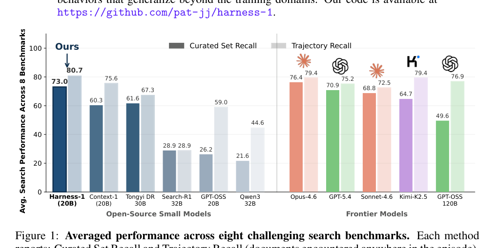
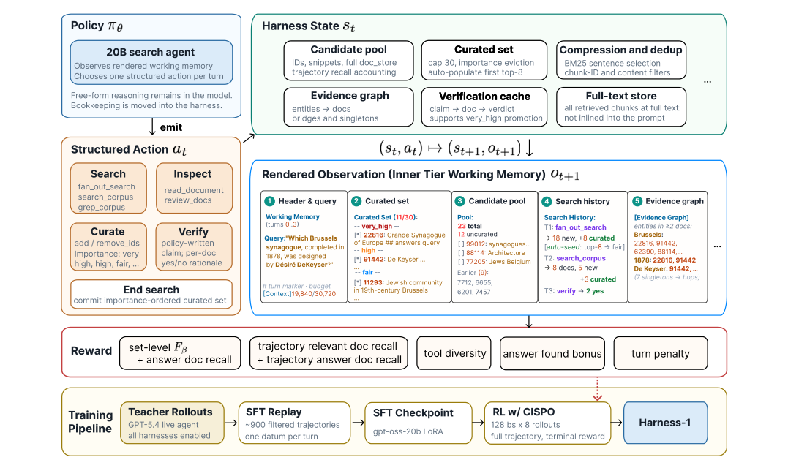
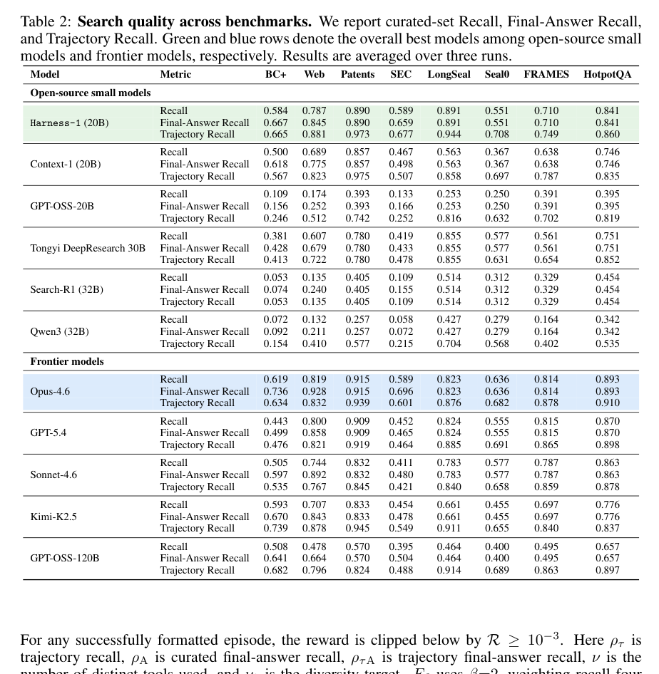
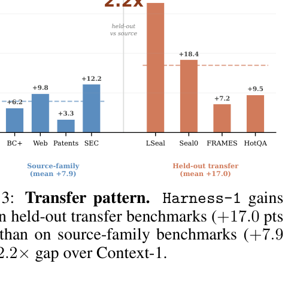
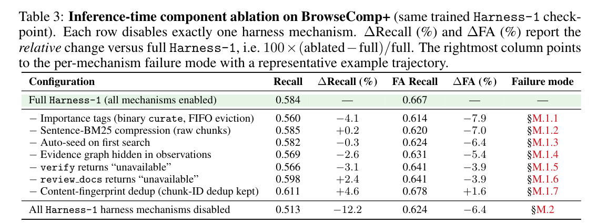
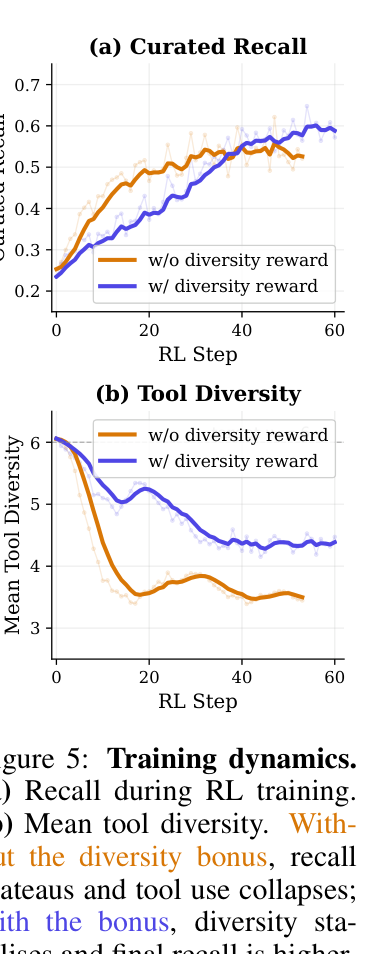
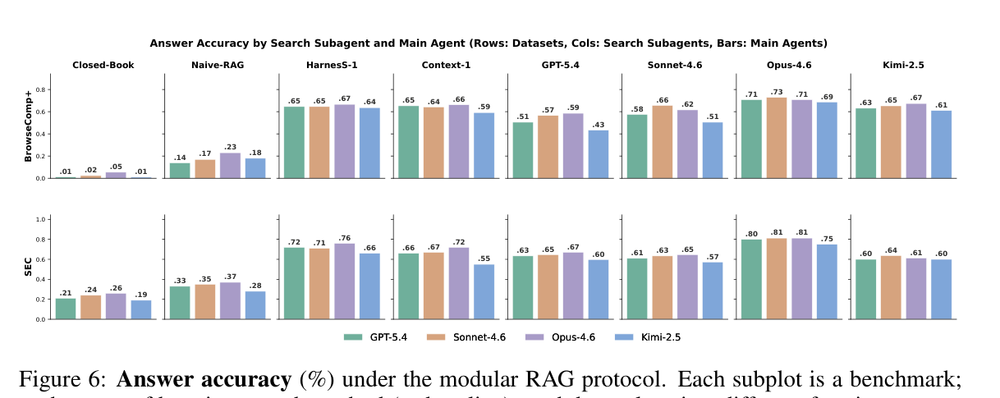
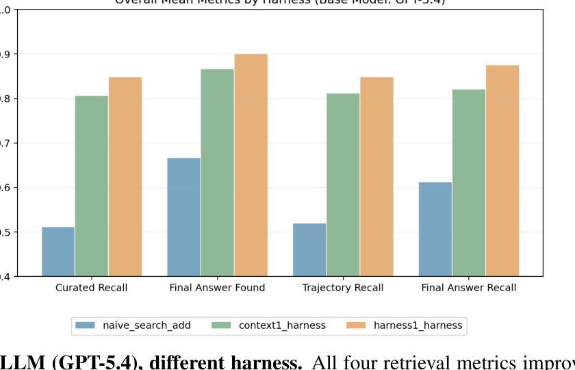
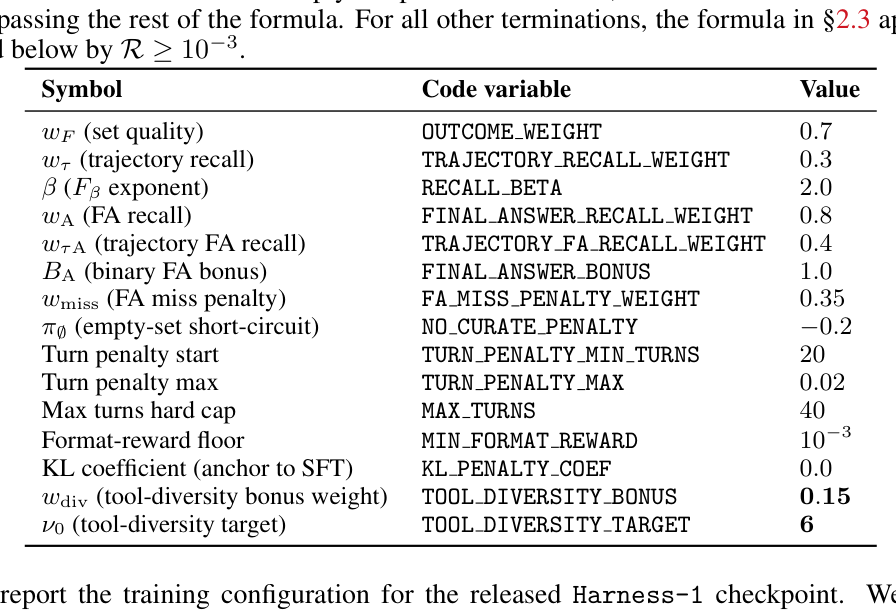
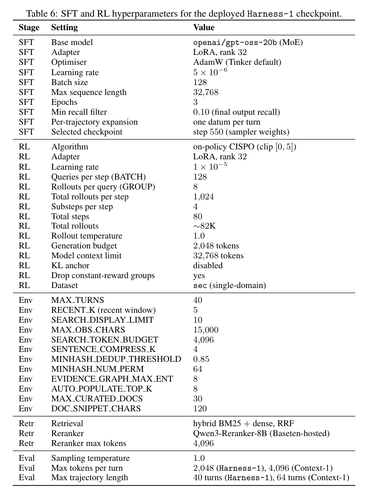
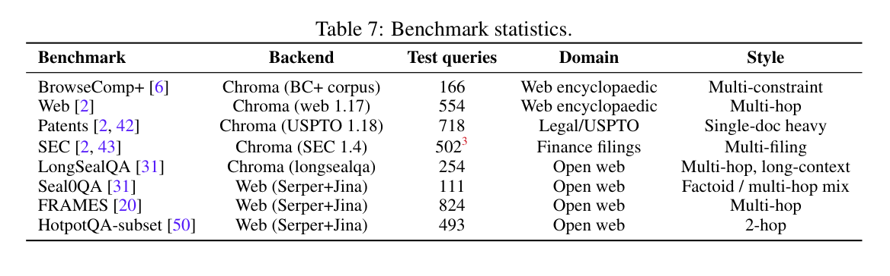
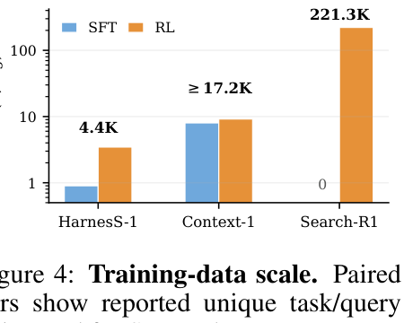
这篇论文的 reproducibility 优点是 appendix 写得具体：tool signatures、reward weights、SFT/RL hyperparameters、benchmark statistics、 working-memory rendering、算法伪代码和 prompts 都给出。难点是外部服务、训练成本和 release 状态需要实际验证。
如果完整训练成本过高，优先做两个小实验：第一，在固定 GPT-5.4 或开源强模型上复现 Figure 7 的 harness-only comparison； 第二，在 BrowseComp+ 100 paired queries 上复现 Table 3 的 inference-time ablation。前者验证 harness 作为 compute-allocation mechanism， 后者验证 state mechanisms 是否真的改变 policy 行为。
Harness-1 可能在三类场景中出问题：证据需要长篇 discourse 而非局部 BM25 sentences 时，compression 会丢 context； relevant evidence 被近重复去重折叠但 qrels 按多个 ID 计分时，recall 被低估或行为被误导；LLM verifier 误把弱支持判为 yes 时，policy 会把错误文档 promote 到 very high。
不要只设计 reward；先设计 RL 要操作的 state。好的 harness 能把稀疏终局 reward 分解成 policy 可学习的中间行为。
teacher trajectories 不是直接 imitation 全部 reasoning，而是 replay 成同一 WORKINGMEMORY 分布下的 per-turn supervised data。
可以把 questioner 产生的 constraints 写入 external state，让 solver 在显式 constraint/evidence graph 上搜索，而非仅靠 prompt history。
tool diversity reward 不是装饰项；它防止 RL 走向最容易刷 trajectory recall 的单一 search action。
区分 discovery 与 selection：trajectory recall 高但 curated recall 低时，应优化 curation policy，而不是盲目增强 retriever。
state renderer、dedup、budget degradation、verification cache 是 agent 能力的一部分，应该随模型训练一起版本化与评估。
这篇论文值得作为“agent harness design for RL”的强参考。最可迁移的不是具体工具名，而是分工原则： policy 负责语义选择，environment 负责可恢复状态，reward 同时奖励发现、选择、答案证据和工具多样性。